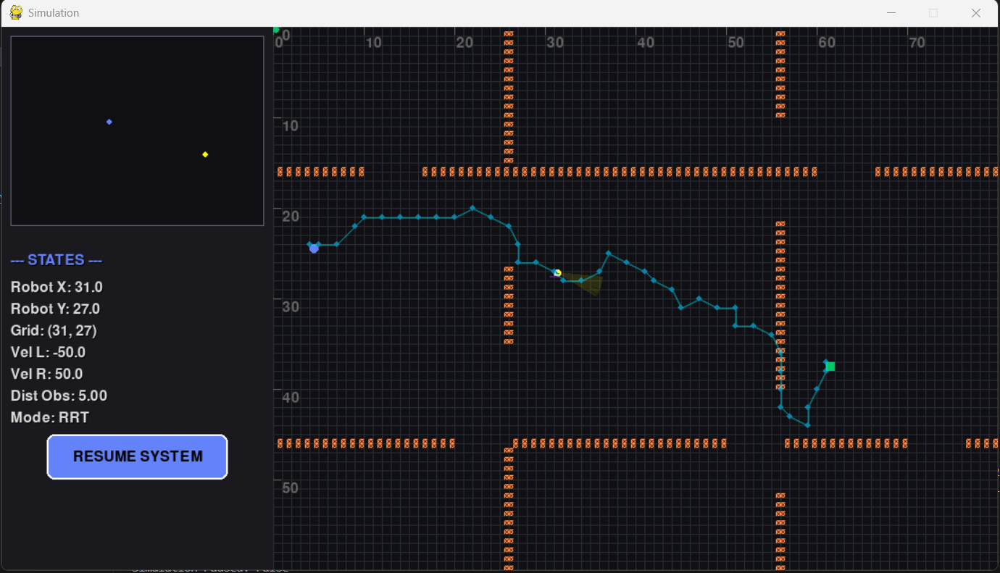
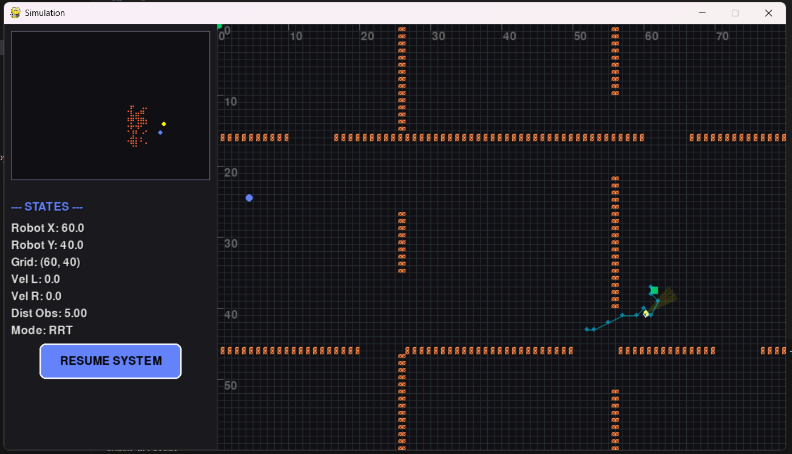

DifferentialBot RRT Simulator

Overview
A 2D autonomous navigation simulator for a differential-drive robot built in PyGame and Pymunk. The robot explores a hallway-style map, detects obstacles with a cone-shaped ultrasonic sensor, constructs a live occupancy map, and navigates using a path computed by the Rapidly-exploring Random Tree (RRT) algorithm. A Kalman Filter fuses GPS and IMU readings into a smooth state estimate, and a bang-bang heading controller translates each waypoint into precise left/right wheel speed commands. When the robot senses a close obstacle it backs up and triggers an automatic path replan — closing the full sense–plan–act loop. The code is structured for hardware portability, with commented-out MicroPython stubs (Raspberry Pi Pico + L298N) ready for real deployment.
| Layer | Responsibility |
|---|---|
| Sensing | Simulates GPS position, IMU heading and a cone-shaped ultrasonic proximity sensor; aggregates all readings each frame |
| Estimation | Kalman Filter (x, y, vx, vy) fuses GPS and IMU data with a constant-velocity model to produce a smooth, noise-reduced state estimate |
| Planning | RRT incrementally builds a random tree from the robot's position to the goal; extracts and smooths the collision-free path |
| Control | High-level controller tracks waypoints and triggers replanning on obstacle proximity; PID translates heading error into differential wheel speeds |
| Mapping | Builds a live occupancy grid from ultrasonic detections; provides collision-check queries to the planner |
| Actuation & Rendering | Applies wheel speeds to the Pymunk physics body; renders the simulation canvas, HUD, and motion traces in real time |
Data flow — each simulation frame
1. Sense — fresh GPS position, IMU heading and ultrasonic distance are read · 2. Estimate — Kalman Filter predicts and updates the fused state · 3. React — the controller checks obstacle proximity and triggers backward motion + replanning if needed · 4. Plan — RRT generates a new collision-free path from the current position to the goal · 5. Control — the PID heading controller computes left/right wheel speeds toward the next waypoint · 6. Act — wheel speeds are applied to the physics body · 7. Map — new obstacle detections are recorded into the occupancy grid
RRT — Rapidly-exploring Random Tree
RRT is a sampling-based algorithm designed to efficiently explore high-dimensional configuration spaces. Starting from the robot's current position, the planner grows a tree by iteratively sampling random points in the map, finding the nearest tree node, and extending toward the sample by a fixed step size. A new node is added only when the connecting segment does not cross any known obstacle. Once a node falls within reach of the goal, the path is reconstructed by tracing parent pointers back to the root and then smoothed before being passed to the controller.
- Probabilistically complete — given enough iterations the planner is guaranteed to find a path if one exists
- Fixed step size — controls the trade-off between exploration speed and path smoothness
- Dynamic replanning — a new tree is generated on-the-fly whenever an obstacle is detected in the robot's path
- Occupancy-aware — collision checks query the live obstacle map, so the planner adapts to obstacles discovered at runtime
Sensor Simulation & Kalman Fusion
Three sensor models run in parallel each frame: a GPS that returns the robot's grid position with additive noise, an IMU that reports the heading angle, and a cone-shaped ultrasonic sensor that measures proximity to obstacles within a forward-facing detection arc. Raw GPS and IMU readings are fed into a Kalman Filter with a 4-state vector (x, y, vx, vy) and a constant-velocity motion model. The predict step propagates the state forward between measurements; the update step fuses both sensors using separate, tunable noise covariances. The resulting smooth estimate is what the controller actually tracks, while both the raw GPS trace and the filtered trace are rendered on screen for direct comparison.
- GPS — noisy position fix, high measurement variance
- IMU — heading rate integrated each frame
- Ultrasonic — cone-shaped proximity detection triggers obstacle avoidance and replanning
- Kalman Filter — produces a smooth, lag-free state estimate used by the controller
Control for a Differential-Drive Robot
A differential-drive robot steers exclusively by varying the speed of its two independent wheels — spinning them at different rates produces any turning radius, including an in-place rotation. The controller converts each RRT waypoint into a target heading angle and compares it against the robot's current orientation. Depending on the angular error, it commands the wheels to spin in opposite directions (turning) or at equal speeds (driving straight), following the waypoint sequence until the goal is reached. This design maps naturally onto real hardware such as an L298N dual motor driver, making the simulation directly portable to a physical platform.
Initial RRT path — cyan dots mark planned waypoints through the hallway

Path replan — new RRT tree generated after ultrasonic obstacle detection
System Architecture
 Full Demo
Full Demo
DifferentialBot RRT Simulator — Full Simulation Demo
Full simulation run: the robot builds an RRT path from start to goal through a hallway map, follows waypoints using bang-bang heading control, detects obstacles with its ultrasonic sensor, backs up and replans automatically — with GPS, Kalman-filtered, and RRT traces all rendered live.
Watch on YouTube